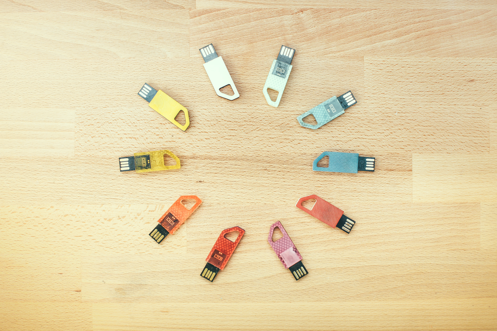
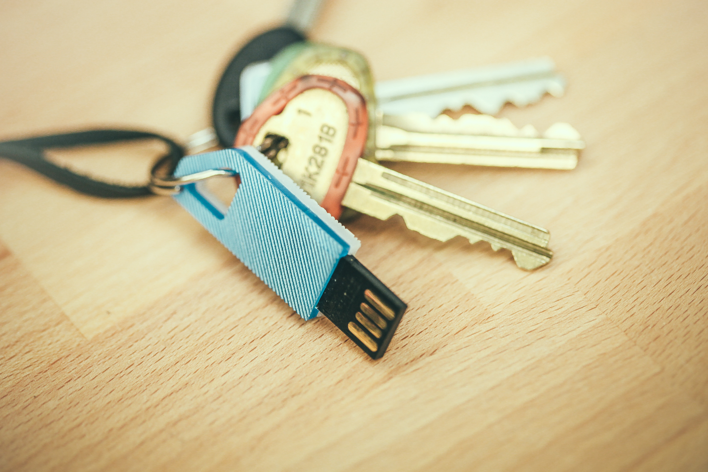
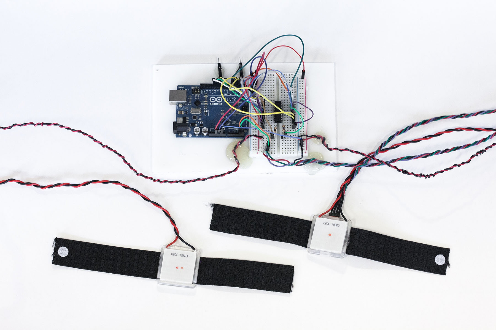
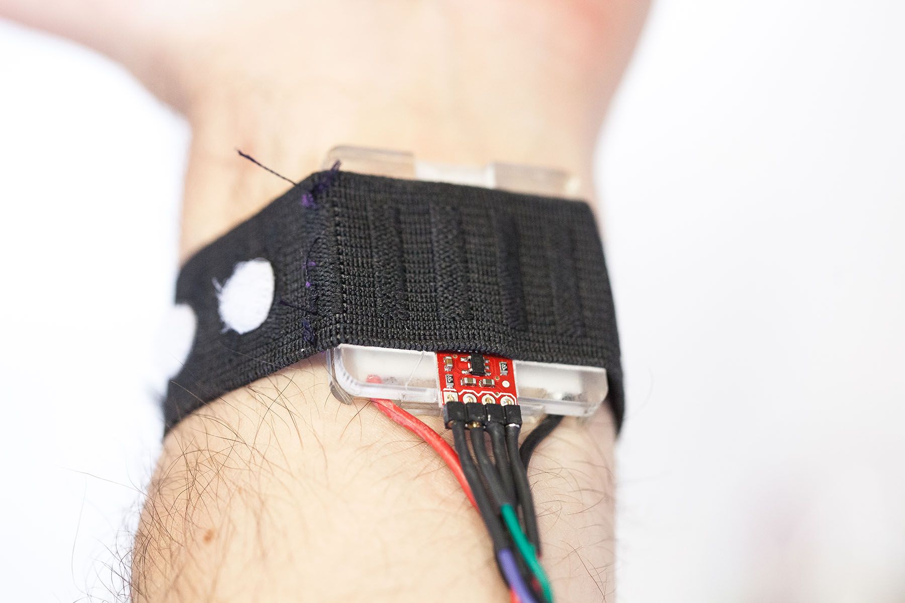
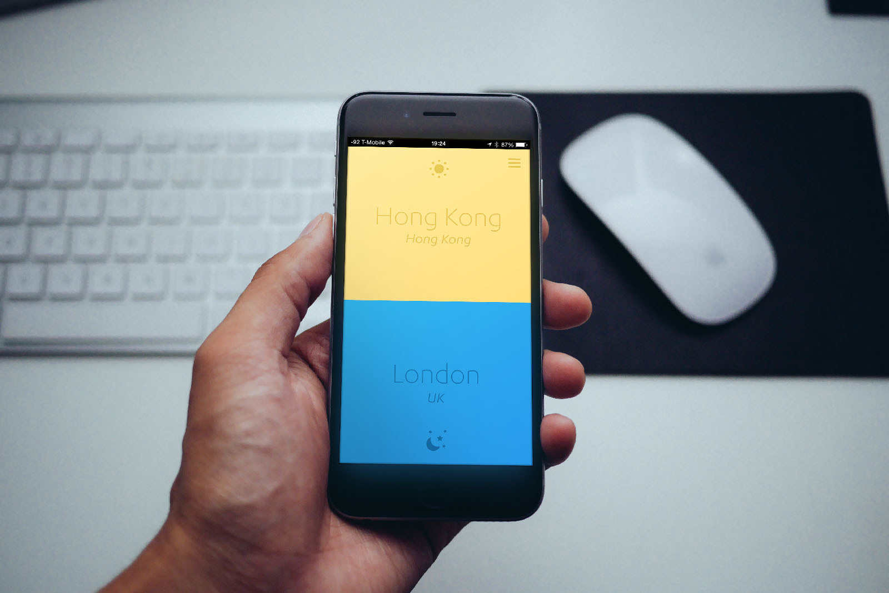
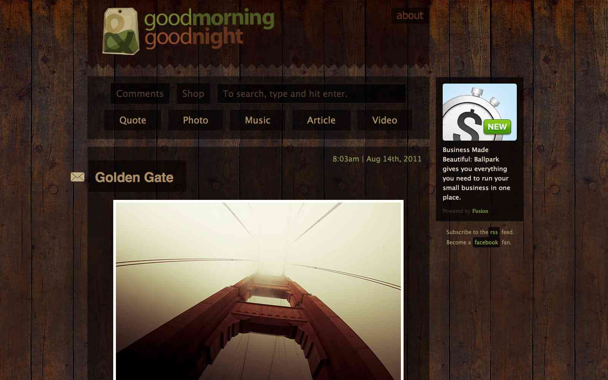

Lamborghini Aventador Commercial: Midnight Run
Midnight Run
Assistant Director of Photography

Flip Drive: Two usb drives in one

- 
Sometimes you just need a bigger barrier than software. By combining two extremely thin flash chips back-to-back, I created a double-sided usb flash drive that when inserted one way contains one set of files on one side and a completely different set on the other.


- 

Polaris: Wrist Compass with Thermal Interface


This project sought to simulate magnetoception in humans and investigate the possible effects using a device providing a constant sense of north via a wrist-worn device oscillating between hot and cold. This aids in forming better mental maps of one's environment and increasing spatial memory. We developed a rough working prototype using a digital magentometer and peltier junctions for thermal feedback.
- 

- 
Drift: Sleeplag Calculator Webapp
Drift is a fun little web app that helps you figure out which timezone it's sane for you to be waking up or going to sleep in at that moment. The code is available on Github and you can view the app and save it to your homescreen on iOS through Safari at http://drift.basheertome.com/
Goodmorning & Goodnight: Lifestyle Blog
Near the end of high school, I created a blog called Goodmorning and Goodnight where I posted a variety of curated links, photos, videos, and more. By the end of 2 years, I'd garnered 6,000,000+ visitors, some great letters from fans, and a few ad sponsors.